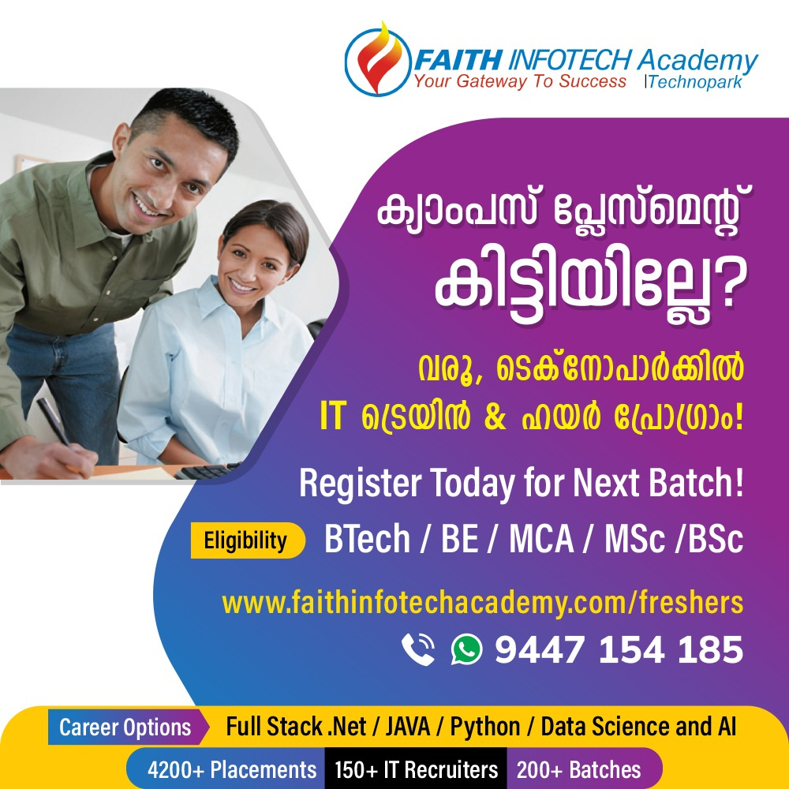

Welcome to FAITH INFOTECH
Faith InfoTech Academy, exclusively authorized by Technopark to conduct IT training and Placements, enables freshers to launch their career in IT as Software Engineers, Test Automation Engineers, Full Stack Developers, Data Science Engineers, Data Analysts, Business Analysts, Cloud Infrastructure Engineers and DevOps Engineers in the shortest possible time. You may be graduate engineer in any stream, an undergraduate or postgraduate in Computer Science, Computer Applications, Electronics or Mathematics aspiring change your track or begin your IT Career. Our Careers programs are truly transformational as vouched by 1000s previous students who found their purpose and career through Faith including those who have switched their career to coding from completely unrelated field. Candidates selected through test and interview will be imparted comprehensive hands on training at our Academy at Technopark Campus which is home to 400+IT companies and 100,000+ IT Professionals. Candidates on successful completion of training will have exclusive access to placements from global IT Companies already employing 4200+ alumni from Faith.
Your Future Is Here!
Experience world-class training infrastructure at Technopark campus — home to over 400 IT companies and thousands of professionals.
Our Campus
Our students participate in hands-on sessions, collaborative projects, and mentorship programs throughout the course.
Message from Our CEO
This video gives insights into choosing the right IT training institution and what sets FAITH INFOTECH apart.